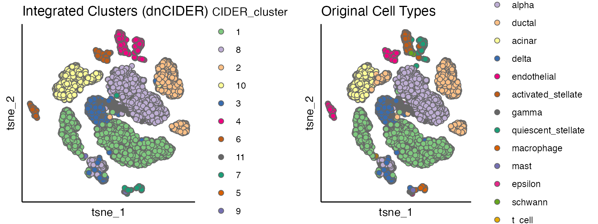

Getting Start with De Novo CIDER (dnCIDER): Cross-Species Pancreas Integration
Source:vignettes/dnCIDER_highlevel.Rmd
dnCIDER_highlevel.RmdWhat is dnCIDER?
dnCIDER is a computational method designed for integrative analysis of single-cell RNA-seq data across batches or species. This vignette demonstrates its application to a human-mouse pancreas dataset, showing how to identify conserved cell populations across species.
Set up
In addition to CIDER, we will load the following packages:
library(CIDER)
library(Seurat)
#> Loading required package: SeuratObject
#> Loading required package: sp
#> 'SeuratObject' was built under R 4.4.0 but the current version is
#> 4.4.1; it is recomended that you reinstall 'SeuratObject' as the ABI
#> for R may have changed
#>
#> Attaching package: 'SeuratObject'
#> The following objects are masked from 'package:base':
#>
#> intersect, t
library(parallel)
library(cowplot)Load pancreas data
The example data can be downloaded from https://figshare.com/s/d5474749ca8c711cc205.
Pancreatic cell data contain cells from human (8241 cells) and mouse (1886 cells).
# Load counts matrix and metadata
load("../data/pancreas_counts.RData") # count matrix
load("../data/pancreas_meta.RData") # meta data/cell information
# Create Seurat object
seu <- CreateSeuratObject(counts = pancreas_counts, meta.data = pancreas_meta)
# Check batch composition
table(seu$Batch)
#>
#> human mouse
#> 8241 1886Perform dnCIDER (high-level)
DnCIDER contains three steps.
Step 1: Initial Clustering
Performs preprocessing and generates initial clusters within each batch:
seu <- initialClustering(
seu,
additional.vars.to.regress = "Sample", # Regress out sample-specific effects
dims = 1:15 # PCA dimensions to use
)
#> | | | 0% | |=================================== | 50% | |======================================================================| 100%Step 2: Compute IDER
Estimates batch-corrected similarity matrices:
ider <- getIDEr(
seu,
downsampling.size = 35, # Cells per cluster for downsampling
use.parallel = FALSE, # Disable parallelization for reproducibility
verbose = FALSE # Suppress progress messages
)Step 3: Final Integrated Clustering
Merges clusters using IDER-derived similarities:
seu <- finalClustering(
seu,
ider,
cutree.h = 0.35 # Height for hierarchical clustering cut
)Visualise clustering results
We use the Seurat pipeline to perform normalisation
(NormalizeData), preprocessing
(FindVariableFeatures and ScaleData) and
dimension reduction (RunPCA and RunTSNE).
# Preprocessing for Visualization
seu <- NormalizeData(seu, verbose = FALSE)
seu <- FindVariableFeatures(seu, selection.method = "vst", nfeatures = 2000, verbose = FALSE)
seu <- ScaleData(seu, verbose = FALSE)
seu <- RunPCA(seu, npcs = 20, verbose = FALSE)
seu <- RunTSNE(seu, reduction = "pca", dims = 1:12)Next we plot integrated clusters vs. ground truth. By comparing the dnCIDER results to the cell annotation from the publication, we observe that dnCIDER correctly identify the majority of populations across two species.
# Generate plots
p1 <- scatterPlot(seu, "tsne",
colour.by = "CIDER_cluster",
title = "Integrated Clusters (dnCIDER)")
p2 <- scatterPlot(seu, "tsne",
colour.by = "Group",
title = "Original Cell Types")
# Arrange side-by-side
plot_grid(p1, p2, ncol = 2)
Interpretation: dnCIDER successfully aligns human (prefix h) and mouse (m) cell types. For example:
- Beta cells (hBeta/mBeta) form a unified cluster
- Alpha cells (hAlpha/mAlpha) show cross-species alignment
- Minor populations like Acinar and Ductal are conserved
Notes & Best Practices
-
Downsampling Size: Adjust
downsampling.size(default: 35) if clusters are small. -
Batch Variable: Ensure your Seurat object contains
a batch identifier (default column name:
"Batch"). - Visualization: Always validate integration using known marker genes in addition to embeddings.
-
Runtime: For large datasets, enable parallelization
with
use.parallel = TRUE.
Reproducibility
sessionInfo()
#> R version 4.4.1 (2024-06-14)
#> Platform: x86_64-apple-darwin20
#> Running under: macOS Monterey 12.5.1
#>
#> Matrix products: default
#> BLAS: /Library/Frameworks/R.framework/Versions/4.4-x86_64/Resources/lib/libRblas.0.dylib
#> LAPACK: /Library/Frameworks/R.framework/Versions/4.4-x86_64/Resources/lib/libRlapack.dylib; LAPACK version 3.12.0
#>
#> locale:
#> [1] en_US.UTF-8/en_US.UTF-8/en_US.UTF-8/C/en_US.UTF-8/en_US.UTF-8
#>
#> time zone: Europe/London
#> tzcode source: internal
#>
#> attached base packages:
#> [1] parallel stats graphics grDevices utils datasets methods
#> [8] base
#>
#> other attached packages:
#> [1] cowplot_1.1.3 Seurat_5.1.0 SeuratObject_5.0.2 sp_2.1-4
#> [5] CIDER_0.99.2
#>
#> loaded via a namespace (and not attached):
#> [1] RColorBrewer_1.1-3 rstudioapi_0.16.0 jsonlite_1.8.8
#> [4] magrittr_2.0.3 spatstat.utils_3.1-0 farver_2.1.2
#> [7] rmarkdown_2.27 fs_1.6.4 ragg_1.3.2
#> [10] vctrs_0.6.5 ROCR_1.0-11 spatstat.explore_3.3-2
#> [13] htmltools_0.5.8.1 sass_0.4.9 sctransform_0.4.1
#> [16] parallelly_1.38.0 KernSmooth_2.23-24 bslib_0.7.0
#> [19] htmlwidgets_1.6.4 desc_1.4.3 ica_1.0-3
#> [22] plyr_1.8.9 plotly_4.10.4 zoo_1.8-12
#> [25] cachem_1.1.0 igraph_2.0.3 mime_0.12
#> [28] lifecycle_1.0.4 iterators_1.0.14 pkgconfig_2.0.3
#> [31] Matrix_1.7-0 R6_2.5.1 fastmap_1.2.0
#> [34] fitdistrplus_1.2-1 future_1.34.0 shiny_1.9.1
#> [37] digest_0.6.37 colorspace_2.1-1 patchwork_1.2.0
#> [40] tensor_1.5 RSpectra_0.16-2 irlba_2.3.5.1
#> [43] textshaping_0.4.0 labeling_0.4.3 progressr_0.14.0
#> [46] fansi_1.0.6 spatstat.sparse_3.1-0 httr_1.4.7
#> [49] polyclip_1.10-7 abind_1.4-5 compiler_4.4.1
#> [52] withr_3.0.1 doParallel_1.0.17 viridis_0.6.5
#> [55] fastDummies_1.7.4 highr_0.11 MASS_7.3-61
#> [58] tools_4.4.1 lmtest_0.9-40 httpuv_1.6.15
#> [61] future.apply_1.11.2 goftest_1.2-3 glue_1.7.0
#> [64] dbscan_1.2.2 nlme_3.1-165 promises_1.3.0
#> [67] grid_4.4.1 Rtsne_0.17 cluster_2.1.6
#> [70] reshape2_1.4.4 generics_0.1.3 gtable_0.3.5
#> [73] spatstat.data_3.1-2 tidyr_1.3.1 data.table_1.16.0
#> [76] utf8_1.2.4 spatstat.geom_3.3-2 RcppAnnoy_0.0.22
#> [79] ggrepel_0.9.5 RANN_2.6.2 foreach_1.5.2
#> [82] pillar_1.9.0 stringr_1.5.1 limma_3.60.6
#> [85] spam_2.10-0 RcppHNSW_0.6.0 later_1.3.2
#> [88] splines_4.4.1 dplyr_1.1.4 lattice_0.22-6
#> [91] survival_3.7-0 deldir_2.0-4 tidyselect_1.2.1
#> [94] locfit_1.5-9.10 miniUI_0.1.1.1 pbapply_1.7-2
#> [97] knitr_1.48 gridExtra_2.3 edgeR_4.2.2
#> [100] scattermore_1.2 xfun_0.46 statmod_1.5.0
#> [103] matrixStats_1.4.1 pheatmap_1.0.12 stringi_1.8.4
#> [106] lazyeval_0.2.2 yaml_2.3.10 evaluate_0.24.0
#> [109] codetools_0.2-20 kernlab_0.9-33 tibble_3.2.1
#> [112] cli_3.6.3 uwot_0.2.2 xtable_1.8-4
#> [115] reticulate_1.39.0 systemfonts_1.1.0 munsell_0.5.1
#> [118] jquerylib_0.1.4 Rcpp_1.0.13 globals_0.16.3
#> [121] spatstat.random_3.3-1 png_0.1-8 spatstat.univar_3.0-1
#> [124] pkgdown_2.1.0 ggplot2_3.5.1 dotCall64_1.1-1
#> [127] listenv_0.9.1 viridisLite_0.4.2 scales_1.3.0
#> [130] ggridges_0.5.6 leiden_0.4.3.1 purrr_1.0.2
#> [133] rlang_1.1.4